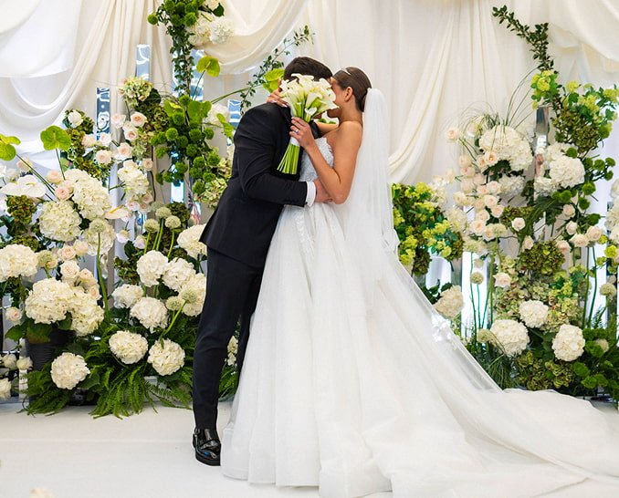
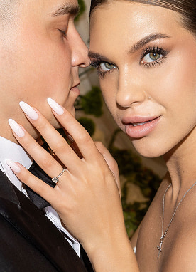
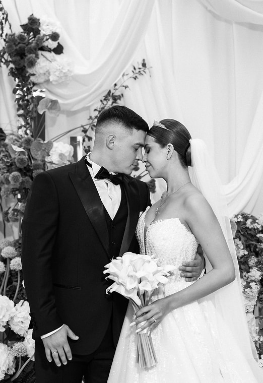
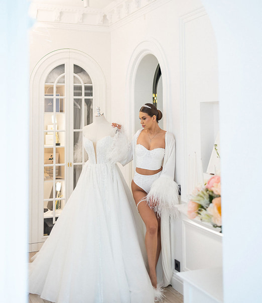
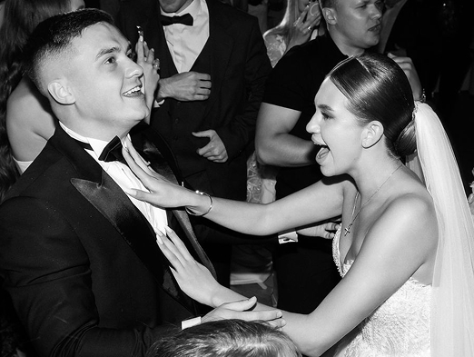
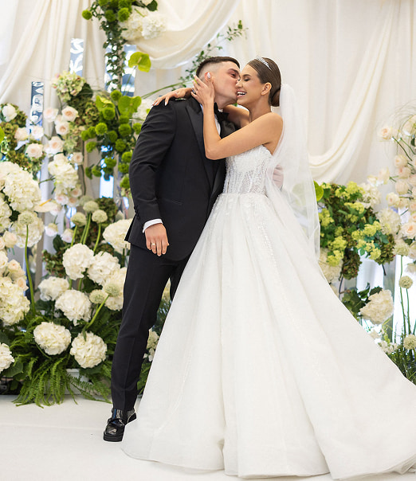
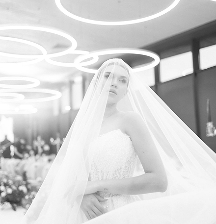
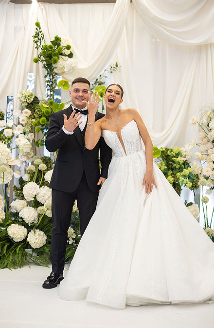
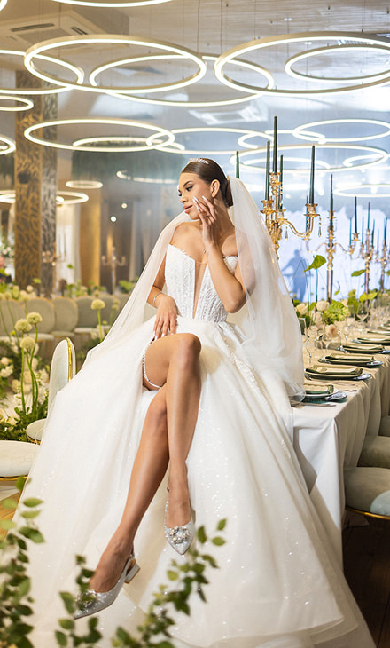
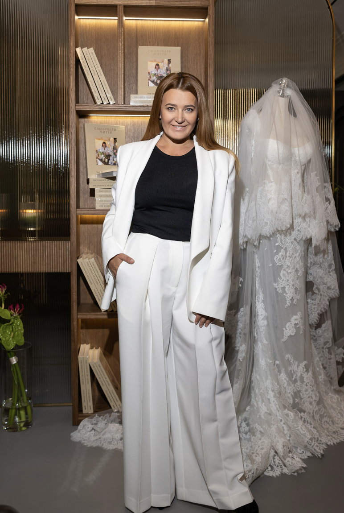

Відвідайте наш інстаграм


Весілля Володимира та Анни починалось із запаху живих квітів у повітрі і відчуття простору, який прийняв тебе ще у дверях. Біла палітра, витримана від першого квітки до останньої деталі сервірування, не була просто колірним рішенням — вона була настроєм, який гості вдихнули разом із повітрям. Гортензії, кали, ранункулюси і темна соковита зелень піднімались від підлоги до стелі суцільною живою красою, і всередині цього простору хотілось зупинитись і просто насолоджуватись моментом. Коли Анна вийшла в бальній сукні зі шлейфом і тіарою, зал замовк, була та особлива тиша, яка буває тільки один раз за вечір і тільки тоді, коли все зроблено так, як треба. Вона йшла, і все розквітало і в цьому погляді було щось більше за кохання. Флористична арка прийняла їх обох, і в ту мить простір, квіти, світло і люди навколо стали єдиним цілим. Ввечері Анна з'явилась в сукні, коротка, легка і зміна розбудила в гостях саме те відчуття свободи, яке перетворює весілля на справжнє свято. Перший танець Анни і Володимира в золотому світлі прожекторів закрив день із такою теплотою, що нікому не хотілось, щоб музика зупинялась. Такі весілля не описують - їх переживають, історію кохання, котра назавжди залишається в серцях.









Я знала, чого хочу, але не знала, як це реалізувати на тому рівні, який я бачила в голові. Команда зрозуміла мене з першої зустрічі і не просто виконували завдання — вони думали разом зі мною, пропонували рішення, які я б сама не придумала, і при цьому завжди залишались у моєму баченні. Процес підготовки був чітким і спокійним. У день весілля я не думала про організацію жодної секунди. Я думала про Вову, про наших гостей, про те, який красивий зал і яке все правильне навколо, відчуття повної присутності у власному святі — те, що залишається з тобою назавжди.

Поділіться з нами своєю мрією і ми допоможемо перетворити її на подію, створену саме для вас. Від ідеї до реалізації — кожне рішення формується навколо ваших цінностей, стилю та настрою, щоб подія стала справжнім відображенням вас.
запланувати консультацію